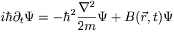

De: La Frikipedia, la enciclopedia extremadamente seria.
De: La Frikipedia, la enciclopedia extremadamente seria. De: La Frikipedia, la enciclopedia extremadamente seria.
La mecánica cuántica es una de las más prodigiosas construcciones humanas, despues del futbolín, y dejando al margen las películas que empiezán sobre las 00:00 en canales cuyos nombres suelen contener un número primo.
Mi novia también tiene su versión del principio, porque yo jamás tengo tiempo cuando tengo energía, ni energía cuando tengo tiempo. Por dios, que fácil es todo cuando sabes cuantica.
Despues de asumir esto, la cosa es coser y cantar.
Lo fundamental en cuántica es que las cosas suenen molonas, y por convenio internacional toas las cosas chulas de la cuántica tienen que terminar en -on u -ones en caso de ser plural.
Por ejemplo, protón, neutrón, fotón, bosón, hadrón, caaaaaaaaaaaaaaaaabr---, y un largo etc. Na de esto existe pero mola decirlo porque la gente flipa mazo. Y son esas cosas que estan en tos laos, pero que solo sabes cuando están si las miras, que es lo que se conoce como el problema de la Medida.
Usualmente el problema de la medida se subdivide en dos problemas:
La cuántica tiene muchas versiones, a cuál mejor, pero la que más mola es la que se conoce como Formulación de integrales de camino.
Esta formulación que Richard P. Feynman, no os digo lo que es la P para que no haya descojono, introdujo porque le vino bien, nos dice que cuando una partícula va de A, a B, pasa por todos los caminos posibles.
Esta teoría es muy cercana a la realidad, porque no hay más que hacer una prueba empírica simple, que se lleva a cabo casi cotidianamente en centros de primer orden mundial de investigación.
Con este simple algoritmo veremos en toda su magnitud la posibilidad de ir por todos los caminos que conectan dichos puntos. Lo guapo de esto es que cuando lo haces clásicamente, sin haber bebido, vas por el camino más corto, recuperando la física precuántica.
Entre las fórmulas que se ha de conocer para el tema este de la cuántica la más famosa es la de Schrödinger:

Esta fórmula es así, esto no se puede resolver jamás, no hay dios que lo haga. Que se sepa solo ha habido dos o tres personas, a lo sumo, que hayan resuelto el tema.
| | ||
|
Materia
Magnitudes
Mecánica
Cinética y Dinámica
Energía
Física Cuántica y Nuclear
Científicos
|
Autor(es):